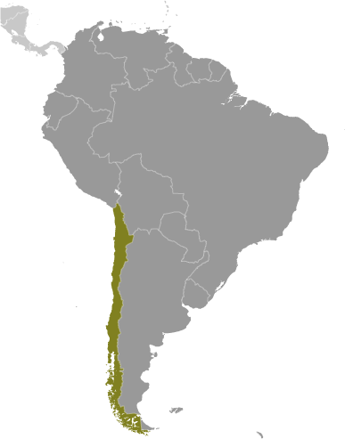
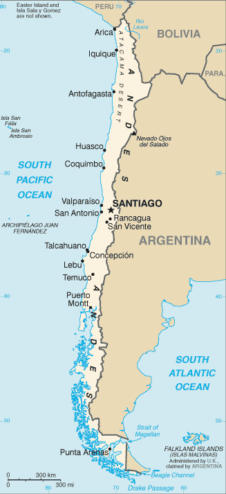
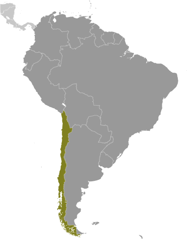
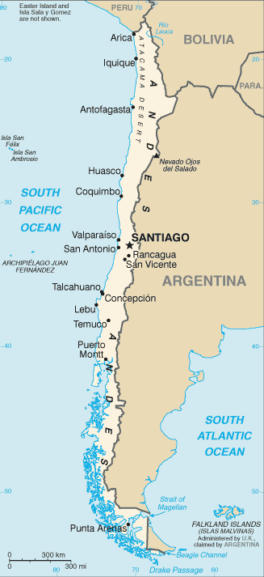

South America :: CHILE
Introduction :: CHILE
-
Prior to the arrival of the Spanish in the 16th century, the Inca ruled northern Chile while an indigenous people, the Mapuche, inhabited central and southern Chile. Although Chile declared its independence in 1810, it did not achieve decisive victory over the Spanish until 1818. In the War of the Pacific (1879-83), Chile defeated Peru and Bolivia to win its present northern regions. In the 1880s, the Chilean central government gained control over the central and southern regions inhabited by the Mapuche. After a series of elected governments, the three-year-old Marxist government of Salvador ALLENDE was overthrown in 1973 by a military coup led by General Augusto PINOCHET, who ruled until a democratically-elected president was inaugurated in 1990. Sound economic policies, maintained consistently since the 1980s, contributed to steady growth, reduced poverty rates by over half, and helped secure the country's commitment to democratic and representative government. Chile has increasingly assumed regional and international leadership roles befitting its status as a stable, democratic nation.
Geography :: CHILE
-
Southern South America, bordering the South Pacific Ocean, between Argentina and Peru30 00 S, 71 00 WSouth Americatotal: 756,102 sq kmland: 743,812 sq kmwater: 12,290 sq kmnote: includes Easter Island (Isla de Pascua) and Isla Sala y Gomezcountry comparison to the world: 39slightly smaller than twice the size of Montanatotal: 7,801 kmborder countries (3): Argentina 6,691 km, Bolivia 942 km, Peru 168 km6,435 kmterritorial sea: 12 nmcontiguous zone: 24 nmexclusive economic zone: 200 nmcontinental shelf: 200/350 nmtemperate; desert in north; Mediterranean in central region; cool and damp in southlow coastal mountains, fertile central valley, rugged Andes in eastmean elevation: 1,871 melevation extremes: lowest point: Pacific Ocean 0 mhighest point: Nevado Ojos del Salado 6,880 mcopper, timber, iron ore, nitrates, precious metals, molybdenum, hydropoweragricultural land: 21.1%arable land 1.7%; permanent crops 0.6%; permanent pasture 18.8%forest: 21.9%other: 57% (2011 est.)11,100 sq km (2012)90% of the population is located in the middle third of the country around the capital of Santiago; the far north (anchored by the Atacama Desert) and the extreme south are relatively underpopulatedsevere earthquakes; active volcanism; tsunamisvolcanism: significant volcanic activity due to more than three-dozen active volcanoes along the Andes Mountains; Lascar (5,592 m), which last erupted in 2007, is the most active volcano in the northern Chilean Andes; Llaima (3,125 m) in central Chile, which last erupted in 2009, is another of the country's most active; Chaiten's 2008 eruption forced major evacuations; other notable historically active volcanoes include Cerro Hudson, Calbuco, Copahue, Guallatiri, Llullaillaco, Nevados de Chillan, Puyehue, San Pedro, and Villarricawidespread deforestation and mining threaten natural resources; air pollution from industrial and vehicle emissions; water pollution from raw sewageparty to: Antarctic-Environmental Protocol, Antarctic-Marine Living Resources, Antarctic Seals, Antarctic Treaty, Biodiversity, Climate Change, Climate Change-Kyoto Protocol, Desertification, Endangered Species, Environmental Modification, Hazardous Wastes, Law of the Sea, Marine Dumping, Ozone Layer Protection, Ship Pollution, Wetlands, Whalingsigned, but not ratified: none of the selected agreementsthe longest north-south trending country in the world, extending across 39 degrees of latitude; strategic location relative to sea lanes between the Atlantic and Pacific Oceans (Strait of Magellan, Beagle Channel, Drake Passage); Atacama Desert - the driest desert in the world - spreads across the northern part of the country; the small crater lake of Ojos del Salado is the world's highest lake (at 6,390 m)
People and Society :: CHILE
-
17,789,267 (July 2017 est.)country comparison to the world: 65noun: Chilean(s)adjective: Chileanwhite and non-indigenous 88.9%, Mapuche 9.1%, Aymara 0.7%, other indigenous groups 1% (includes Rapa Nui, Likan Antai, Quechua, Colla, Diaguita, Kawesqar, Yagan or Yamana), unspecified 0.3% (2012 est.)Spanish 99.5% (official), English 10.2%, indigenous 1% (includes Mapudungun, Aymara, Quechua, Rapa Nui), other 2.3%, unspecified 0.2%note: shares sum to more than 100% because some respondents gave more than one answer on the census (2012 est.)Roman Catholic 66.7%, Evangelical or Protestant 16.4%, Jehovah's Witness 1%, other 3.4%, none 11.5%, unspecified 1.1% (2012 est.)Chile is in the advanced stages of demographic transition and is becoming an aging society - with fertility below replacement level, low mortality rates, and life expectancy on par with developed countries. Nevertheless, with its dependency ratio nearing its low point, Chile could benefit from its favorable age structure. It will need to keep its large working-age population productively employed, while preparing to provide for the needs of its growing proportion of elderly people, especially as women - the traditional caregivers - increasingly enter the workforce. Over the last two decades, Chile has made great strides in reducing its poverty rate, which is now lower than most Latin American countries. However, its severe income inequality ranks as the worst among members of the Organization for Economic Cooperation and Development. Unequal access to quality education perpetuates this uneven income distribution.Chile has historically been a country of emigration but has slowly become more attractive to immigrants since transitioning to democracy in 1990 and improving its economic stability (other regional destinations have concurrently experienced deteriorating economic and political conditions). Most of Chile's small but growing foreign-born population consists of transplants from other Latin American countries, especially Peru.0-14 years: 20.11% (male 1,825,254/female 1,751,735)15-24 years: 15.04% (male 1,364,831/female 1,311,216)25-54 years: 43.08% (male 3,830,538/female 3,832,989)55-64 years: 10.96% (male 918,559/female 1,031,153)65 years and over: 10.81% (male 805,880/female 1,117,112) (2017 est.)total dependency ratio: 45.5youth dependency ratio: 30.3elderly dependency ratio: 15.2potential support ratio: 6.6 (2015 est.)total: 34.4 yearsmale: 33.2 yearsfemale: 35.6 years (2017 est.)country comparison to the world: 850.77% (2017 est.)country comparison to the world: 13813.6 births/1,000 population (2017 est.)country comparison to the world: 1436.2 deaths/1,000 population (2017 est.)country comparison to the world: 1550.3 migrant(s)/1,000 population (2017 est.)country comparison to the world: 6790% of the population is located in the middle third of the country around the capital of Santiago; the far north (anchored by the Atacama Desert) and the extreme south are relatively underpopulatedurban population: 89.9% of total population (2017)rate of urbanization: 0.96% annual rate of change (2015-20 est.)SANTIAGO (capital) 6.507 million; Valparaiso 907,000; Concepcion 816,000 (2015)at birth: 1.04 male(s)/female0-14 years: 1.04 male(s)/female15-24 years: 1.04 male(s)/female25-54 years: 1 male(s)/female55-64 years: 0.89 male(s)/female65 years and over: 0.72 male(s)/femaletotal population: 0.97 male(s)/female (2016 est.)22 deaths/100,000 live births (2015 est.)country comparison to the world: 128total: 6.6 deaths/1,000 live birthsmale: 7.1 deaths/1,000 live birthsfemale: 6.1 deaths/1,000 live births (2017 est.)country comparison to the world: 164total population: 78.9 yearsmale: 75.9 yearsfemale: 82.1 years (2017 est.)country comparison to the world: 511.8 children born/woman (2017 est.)country comparison to the world: 1527.8% of GDP (2014)country comparison to the world: 601.03 physicians/1,000 population (2009)2.1 beds/1,000 population (2011)improved:urban: 99.7% of populationrural: 93.3% of populationtotal: 99% of populationunimproved:urban: 0.3% of populationrural: 6.7% of populationtotal: 1% of population (2015 est.)improved:urban: 100% of populationrural: 90.9% of populationtotal: 99.1% of populationunimproved:urban: 0% of populationrural: 9.1% of populationtotal: 0.9% of population (2015 est.)0.5% (2016 est.)country comparison to the world: 6361,000 (2016 est.)country comparison to the world: 53NA28% (2016)country comparison to the world: 320.5% (2014)country comparison to the world: 1374.8% of GDP (2014)country comparison to the world: 90definition: age 15 and over can read and writetotal population: 97.5%male: 97.6%female: 97.4% (2015 est.)total: 16 yearsmale: 16 yearsfemale: 17 years (2015)total: 15.4%male: 14.3%female: 17% (2015 est.)country comparison to the world: 73
Government :: CHILE
-
conventional long form: Republic of Chileconventional short form: Chilelocal long form: Republica de Chilelocal short form: Chileetymology: derivation of the name is unclear, but it may come from the Mapuche word "chilli" meaning "limit of the earth" or from the Quechua "chiri" meaning "cold"presidential republicname: Santiago; note - Valparaiso is the seat of the national legislaturegeographic coordinates: 33 27 S, 70 40 Wtime difference: UTC-3 (2 hours ahead of Washington, DC, during Standard Time)daylight saving time: +1hr, begins second Sunday in August; ends second Sunday in May; note - Punta Arenas observes DST throughout the year15 regions (regiones, singular - region); Aysen, Antofagasta, Araucania, Arica y Parinacota, Atacama, Biobio, Coquimbo, Libertador General Bernardo O'Higgins, Los Lagos, Los Rios, Magallanes y de la Antartica Chilena, Maule, Region Metropolitana (Santiago), Tarapaca, Valparaisonote: the US does not recognize claims to Antarctica18 September 1810 (from Spain)Independence Day, 18 September (1810)many previous; latest adopted 11 September 1980, effective 11 March 1981; amended many times, last in 2011; note - in late 2015, the Chilean Government initiated a process to reform its constitution (2016)civil law system influenced by several West European civil legal systems; judicial review of legislative acts by the Constitutional Tribunalhas not submitted an ICJ jurisdiction declaration; accepts ICCt jurisdictioncitizenship by birth: yescitizenship by descent: yesdual citizenship recognized: yesresidency requirement for naturalization: 5 years18 years of age; universalchief of state: President Michelle BACHELET Jeria (since 11 March 2014); note - the president is both chief of state and head of governmenthead of government: President Michelle BACHELET Jeria (since 11 March 2014)cabinet: Cabinet appointed by the presidentelections/appointments: president directly elected by absolute majority popular vote in 2 rounds if needed for a single 4-year term; election last held on 17 November 2013 with a runoff held on 15 December 2013 (next to be held on 19 November 2017)election results: Michelle BACHELET Jeria elected president in runoff; percent of vote - Michelle BACHELET Jeria (PS/New Majority) 62.2%; Evelyn Rose MATTHEI Fornet (UDI/Let's Go Chile Coalition) 37.8%description: bicameral National Congress or Congreso Nacional consists of the Senate or Senado (38 seats; members directly elected in multi-seat constituencies by simple majority vote to serve 8-year terms with one-half of the membership renewed every 4 years) and the Chamber of Deputies or Camara de Diputados (120 seats; members directly elected in multi-seat constituencies by simple majority vote to serve 4-year terms)elections: Senate - last held on 17 November 2013 (next to be held on 19 November 2017); Chamber of Deputies - last held on 17 November 2013 (next to be held on 19 November 2017)election results: Senate - percent of vote by party - NA; seats by party - New Majority Coalition (formerly known as Concertacion) 19 (DC 6, PS 6, PPD 6, MAS 1), Let's Go Chile Coalition (formerly known as the Coalition for Change and the Alianza coalition) 15 (RN 6, UDI 8, Amplitude Party 1), independents 4; Chamber of Deputies - percent of vote by party - NA; seats by party - New Majority 68 (DC 21, PS 16, PPD 14, PC 6, PRSD 6, Citizen Left 1, independents 4), Coalition for Change 47 (UDI 29, RN 14, independents 3, EP 1), Liberal Party 1, independents 4note: in January 2015, the Chilean Congress voted to end the binomial system that was put in place under Gen. Augusto PINOCHET; the Congress also voted to expand its size (155 seats in the chamber of Deputies and 50 seats in the Senate) and establish rules to ensure that there is equitable gender representation; the new electoral system will be put in place in the November 2017 electionshighest court(s): Supreme Court or Corte Suprema (consists of a court president and 20 members or ministros); Constitutional Court (consists of 10 members); Elections Qualifying Court (consists of 5 members)judge selection and term of office: Supreme Court president and judges (ministers) appointed by the president of the republic and ratified by the Senate from lists of candidates provided by the court itself; judges appointed for life with mandatory retirement at age 70; Constitutional Court members appointed - 3 by the Supreme Court, 3 by the president of the republic, 2 by the Chamber of Deputies, and 2 by the Senate; members serve 9-year terms with partial membership replacement every 3 years (the court reviews constitutionality of legislation); Elections Qualifying Court members appointed by lottery - 1 by the former president or vice-president of the Senate and 1 by the former president or vice-president of the Chamber of Deputies, 2 by the Supreme Court, and 1 by the Appellate Court of Valparasio; members appointed for 4-year termssubordinate courts: Courts of Appeal; oral criminal tribunals; military tribunals; local police courts; specialized tribunals and courts in matters such as family, labor, customs, taxes, and electoral affairsAmplitude (Amplitud) [Lily PEREZ]Broad Social Movement or MAS [Cristian TAPIA Ramos]Democratic Revolution or RD [Rodrigo ECHECOPAR]Let’s Go Chile Coalition (Chile Vamos) (formerly the Alliance for Chile, includes Political Evolution or EVOPOLI [Jorge SAINT JEAN], Independent Regionalist Party or PRI [Alejandra BRAVO Hidalgo], National Renewal or RN [Cristian MONCKEBERG Bruner], and Independent Democratic Union or UDI [Jacqueline VAN RYSSELBERGHE Herrera])Liberal Party (Partido Liberal de Chile) [Vlado MIROSEVIC]New Majority Coalition (Nueva Mayoria) (includes Christian Democratic Party or DC [Carolina GOIC Boroevic], Communist Party of Chile or PC [Guillermo TEILLIER del Valle], Party for Democracy or PPD [Gonzalo NAVARRETE], Radical Social Democratic Party or PRSD [Ernesto VELASCO Rodriguez], and Socialist Party or PS [Alvaro ELIZALDE Soto])Progressive Party or PRO [Patricia MORALES]Roman Catholic Church, particularly conservative groups such as Opus DeiUnited Labor Central or CUT (includes trade unionists from the country's 5 largest labor confederations)other: university student federations at all major universitiesAPEC, BIS, CAN (associate), CD, CELAC, FAO, G-15, G-77, IADB, IAEA, IBRD, ICAO, ICC (national committees), ICCt, ICRM, IDA, IFAD, IFC, IFRCS, IHO, ILO, IMF, IMO, IMSO, Interpol, IOC, IOM, IPU, ISO, ITSO, ITU, ITUC (NGOs), LAES, LAIA, Mercosur (associate), MIGA, MINUSTAH, NAM, OAS, OECD (enhanced engagement), OPANAL, OPCW, Pacific Alliance, PCA, SICA (observer), UN, UNASUR, UNCTAD, UNESCO, UNFICYP, UNHCR, UNIDO, Union Latina, UNMOGIP, UNTSO, UNWTO, UPU, WCO, WFTU (NGOs), WHO, WIPO, WMO, WTOchief of mission: Ambassador Juan Gabriel VALDES Soublette (since 21 May 2014)chancery: 1732 Massachusetts Avenue NW, Washington, DC 20036telephone: [1] (202) 785-1746FAX: [1] (202) 887-5579consulate(s) general: Chicago, Houston, Los Angeles, Miami, New York, San Franciscochief of mission: Ambassador Carol PEREZ (since 14 November 2016)embassy: Avenida Andres Bello 2800, Las Condes, Santiagomailing address: APO AA 34033telephone: [56] (2) 2330-3000FAX: [56] (2) 2330-3710, 2330-3160two equal horizontal bands of white (top) and red; a blue square the same height as the white band at the hoist-side end of the white band; the square bears a white five-pointed star in the center representing a guide to progress and honor; blue symbolizes the sky, white is for the snow-covered Andes, and red represents the blood spilled to achieve independencenote: design influenced by the US flaghuemul (mountain deer), Andean condor; national colors: red, white, bluename: "Himno Nacional de Chile" (National Anthem of Chile)lyrics/music: Eusebio LILLO Robles and Bernardo DE VERA y Pintado/Ramon CARNICER y Battlenote: music adopted 1828, original lyrics adopted 1818, adapted lyrics adopted 1847; under Augusto PINOCHET"s military rule, a verse glorifying the army was added; however, as a protest, some citizens refused to sing this verse; it was removed when democracy was restored in 1990
Economy :: CHILE
-
Chile has a market-oriented economy characterized by a high level of foreign trade and a reputation for strong financial institutions and sound policy that have given it the strongest sovereign bond rating in South America. Exports of goods and services account for approximately one-third of GDP, with commodities making up some 60% of total exports. Copper is Chile’s top export and provides 20% of government revenue.From 2003 through 2013, real growth averaged almost 5% per year, despite the slight contraction in 2009 that resulted from the global financial crisis. Growth slowed to an estimated 1.7% in 2016. A continued drop in copper prices prompted Chile to experience its second consecutive year of slow growth, elevated inflation, and a depreciating currency.Chile deepened its longstanding commitment to trade liberalization with the signing of a free trade agreement with the US, effective 1 January 2004. Chile has 22 trade agreements covering 60 countries including agreements with the EU, Mercosur, China, India, South Korea, and Mexico. In May 2010, Chile signed the OECD Convention, becoming the first South American country to join the OECD. In October 2015, Chile signed the Trans-Pacific Partnership trade agreement.The Chilean Government has generally followed a countercyclical fiscal policy, accumulating surpluses in sovereign wealth funds during periods of high copper prices and economic growth, and generally allowing deficit spending only during periods of low copper prices and growth. As of 31 October 2016, those sovereign wealth funds - kept mostly outside the country and separate from Central Bank reserves - amounted to more than $23.5 billion. Chile used these funds to finance fiscal stimulus packages during the 2009 economic downturn.In 2014, President Michelle BACHELET introduced tax reforms aimed at delivering her campaign promise to fight inequality and to provide access to education and health care. The reforms are expected to generate additional tax revenues equal to 3% of Chile’s GDP, mostly by increasing corporate tax rates to OECD averages.$438.3 billion (2016 est.)$426 billion (2015 est.)$412.1 billion (2014 est.)note: data are in 2016 dollarscountry comparison to the world: 44$247 billion (2016 est.)1.6% (2016 est.)2.3% (2015 est.)1.9% (2014 est.)country comparison to the world: 150$24,100 (2016 est.)$24,000 (2015 est.)$23,700 (2014 est.)note: data are in 2016 dollarscountry comparison to the world: 8020.2% of GDP (2016 est.)21.3% of GDP (2015 est.)21.5% of GDP (2014 est.)country comparison to the world: 103household consumption: 64%government consumption: 13.5%investment in fixed capital: 23.2%investment in inventories: -1.6%exports of goods and services: 28.4%imports of goods and services: -27.6% (2016 est.)agriculture: 4.3%industry: 31.3%services: 64.4% (2016 est.)grapes, apples, pears, onions, wheat, corn, oats, peaches, garlic, asparagus, beans; beef, poultry, wool; fish; timbercopper, lithium, other minerals, foodstuffs, fish processing, iron and steel, wood and wood products, transport equipment, cement, textiles-0.7% (2016 est.)country comparison to the world: 1658.762 million (2016 est.)country comparison to the world: 58agriculture: 9.2%industry: 23.7%services: 67.1% (2013)6.5% (2016 est.)6.3% (2015 est.)country comparison to the world: 8614.4% (2013)lowest 10%: 1.7%highest 10%: 41.5% (2013 est.)50.5 (2013)57.1 (2000)country comparison to the world: 15revenues: $51.76 billionexpenditures: $58.55 billion (2016 est.)21% of GDP (2016 est.)country comparison to the world: 143-2.7% of GDP (2016 est.)country comparison to the world: 10921.3% of GDP (2016 est.)17.4% of GDP (2015 est.)country comparison to the world: 182calendar year3.8% (2016 est.)4.3% (2015 est.)country comparison to the world: 1593.35% (31 December 2015)3% (31 December 2014)country comparison to the world: 1035.59% (31 December 2016 est.)5.52% (31 December 2015 est.)country comparison to the world: 129$44.01 billion (31 December 2016 est.)$39.88 billion (31 December 2015 est.)country comparison to the world: 54$158.3 billion (31 December 2016 est.)$140.4 billion (31 December 2015 est.)country comparison to the world: 44$211.6 billion (31 December 2016 est.)$188.4 billion (31 December 2015 est.)country comparison to the world: 45$190.4 billion (31 December 2015 est.)$233.2 billion (31 December 2014 est.)$265.2 billion (31 December 2013 est.)country comparison to the world: 35$-3.528 billion (2016 est.)$-4.669 billion (2015 est.)country comparison to the world: 163$60.6 billion (2016 est.)$62.18 billion (2015 est.)country comparison to the world: 42copper, fruit, fish products, paper and pulp, chemicals, wineChina 28.6%, US 14.1%, Japan 8.6%, South Korea 6.9%, Brazil 5% (2016)$55.34 billion (2016 est.)$58.72 billion (2015 est.)country comparison to the world: 47petroleum and petroleum products, chemicals, electrical and telecommunications equipment, industrial machinery, vehicles, natural gasChina 24.3%, US 14.7%, Brazil 9.3%, Argentina 4.4%, France 4.2% (2016)$40.49 billion (31 December 2016 est.)$38.64 billion (31 December 2015 est.)country comparison to the world: 42$158.1 billion (31 December 2016 est.)$153 billion (31 December 2015 est.)country comparison to the world: 40$199.8 billion (31 December 2016 est.)$184.5 billion (31 December 2015 est.)country comparison to the world: 29$90.54 billion (31 December 2016 est.)$83.32 billion (31 December 2015 est.)country comparison to the world: 36Chilean pesos (CLP) per US dollar -676.94 (2016 est.)676.94 (2015 est.)658.93 (2014 est.)570.37 (2013 est.)486.49 (2012 est.)
Energy :: CHILE
-
population without electricity: 70,600electrification - total population: 99.6%electrification - urban areas: 100%electrification - rural areas: 98% (2012)71.66 billion kWh (2015 est.)country comparison to the world: 4067.95 billion kWh (2015 est.)country comparison to the world: 400 kWh (2016 est.)country comparison to the world: 1190 kWh (2016 est.)country comparison to the world: 13321.64 million kW (2015 est.)country comparison to the world: 4060.8% of total installed capacity (2015 est.)country comparison to the world: 1270% of total installed capacity (2015 est.)country comparison to the world: 6630% of total installed capacity (2015 est.)country comparison to the world: 7116.1% of total installed capacity (2015 est.)country comparison to the world: 444,423 bbl/day (2016 est.)country comparison to the world: 820 bbl/day (2016 est.)country comparison to the world: 105163,000 bbl/day (2016 est.)country comparison to the world: 34150 million bbl (1 January 2017 es)country comparison to the world: 63215,300 bbl/day (2016 est.)country comparison to the world: 50337,400 bbl/day (2016 est.)country comparison to the world: 414,500 bbl/day (2016 est.)country comparison to the world: 96160,900 bbl/day (2016 est.)country comparison to the world: 431.008 billion cu m (2015 est.)country comparison to the world: 675.23 billion cu m (2015 est.)country comparison to the world: 630 cu m (2014 est.)country comparison to the world: 833.727 billion cu m (2015 est.)country comparison to the world: 3997.97 billion cu m (1 January 2017 es)country comparison to the world: 5476 million Mt (2013 est.)country comparison to the world: 47
Communications :: CHILE
-
total subscriptions: 3,464,107subscriptions per 100 inhabitants: 20 (July 2016 est.)country comparison to the world: 44total: 22,974,289subscriptions per 100 inhabitants: 130 (July 2016 est.)country comparison to the world: 49general assessment: privatization began in 1988; most advanced telecommunications infrastructure in South America; modern system based on extensive microwave radio relay facilities; domestic satellite system with 3 earth stationsdomestic: number of fixed-line connections have stagnated in recent years as mobile-cellular usage continues to increase, reaching 130 telephones per 100 personsinternational: country code - 56; landing points for the Pan American, South America-1, and South American Crossing/Latin America Nautilus submarine cables providing links to the US and to Central and South America; satellite earth stations - 2 Intelsat (Atlantic Ocean) (2016)national and local terrestrial TV channels, coupled with extensive cable TV networks; the state-owned Television Nacional de Chile (TVN) network is self-financed through commercial advertising revenues and is not under direct government control; large number of privately owned TV stations; about 250 radio stations (2007).cltotal: 11,650,840percent of population: 66.0% (July 2016 est.)country comparison to the world: 43
Transportation :: CHILE
-
number of registered air carriers: 9inventory of registered aircraft operated by air carriers: 173annual passenger traffic on registered air carriers: 15,006,762annual freight traffic on registered air carriers: 1,392.236 million mt-km (2015)CC (2016)481 (2013)country comparison to the world: 15total: 90over 3,047 m: 52,438 to 3,047 m: 71,524 to 2,437 m: 23914 to 1,523 m: 31under 914 m: 24 (2017)total: 3912,438 to 3,047 m: 51,524 to 2,437 m: 11914 to 1,523 m: 56under 914 m: 319 (2013)1 (2013)gas 3,160 km; liquid petroleum gas 781 km; oil 985 km; refined products 722 km (2013)total: 7,281.5 kmbroad gauge: 3,428 km 1.676-m gauge (1,691 km electrified)narrow gauge: 3,853.5 km 1.000-m gauge (2014)country comparison to the world: 30total: 77,764 kmpaved: 18,119 km (includes 2,387 km of expressways)unpaved: 59,645 km (2010)country comparison to the world: 62total: 42by type: bulk carrier 13, cargo 5, chemical tanker 7, container 2, liquefied gas 1, passenger 3, passenger/cargo 2, petroleum tanker 8, roll on/roll off 1foreign-owned: 1 (Norway 1)registered in other countries: 52 (Argentina 6, Brazil 1, Honduras 1, Isle of Man 9, Liberia 9, Panama 14, Peru 6, Singapore 6) (2010)country comparison to the world: 76major seaport(s): Coronel, Huasco, Lirquen, Puerto Ventanas, San Antonio, San Vicente, ValparaisoLNG terminal(s) (import): Mejillones, Quintero
Military and Security :: CHILE
-
1.87% of GDP (2016)1.91% of GDP (2015)1.96% of GDP (2014)1.99% of GDP (2013)2.05% of GDP (2012)country comparison to the world: 38Chilean Army, Chilean Navy (Armada de Chile, includes Naval Aviation, Marine Corps, and Maritime Territory and Merchant Marine Directorate (Directemar)), Chilean Air Force (Fuerza Aerea de Chile, FACh) (2015)18-45 years of age for voluntary male and female military service, although the right to compulsory recruitment of males 18-45 is retained; service obligation is 12 months for Army and 22 months for Navy and Air Force (2015)
Transnational Issues :: CHILE
-
Chile and Peru rebuff Bolivia's reactivated claim to restore the Atacama corridor, ceded to Chile in 1884, but Chile has offered instead unrestricted but not sovereign maritime access through Chile to Bolivian natural gas; Chile rejects Peru's unilateral legislation to change its latitudinal maritime boundary with Chile to an equidistance line with a southwestern axis favoring Peru; in October 2007, Peru took its maritime complaint with Chile to the ICJ; territorial claim in Antarctica (Chilean Antarctic Territory) partially overlaps Argentine and British claims; the joint boundary commission, established by Chile and Argentina in 2001, has yet to map and demarcate the delimited boundary in the inhospitable Andean Southern Ice Field (Campo de Hielo Sur)transshipment country for cocaine destined for Europe and the region; some money laundering activity, especially through the Iquique Free Trade Zone; imported precursors passed on to Bolivia; domestic cocaine consumption is rising, making Chile a significant consumer of cocaine